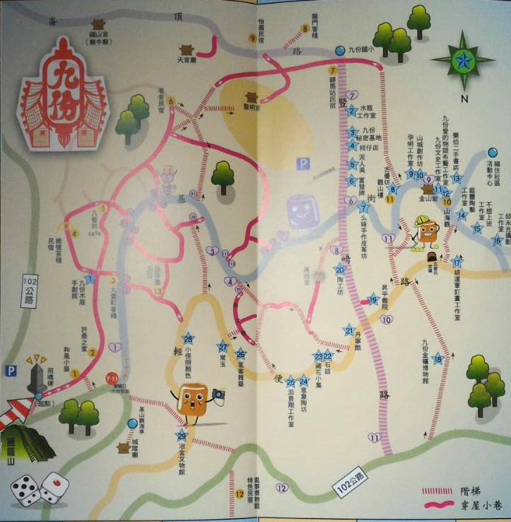

九九香芋，關於我們的九份
地理位置
九份位於新北市的瑞芳區，臨山靠海，與基隆山遙望；整個小鎮座落於山坡地上，也因此形成了獨特的山坡和階梯式建築景觀。

歷史發展
九份在1892年發現金礦，1893年金瓜石本山礦體發現金礦，由於九份與金瓜石都產金，自然將兩個地名聯想在一起，但兩處的管理方式和採金方式不同， 礦區文化與生活也截然不同。 九份自日治時期至終戰後，交由臺陽礦業管理。而金瓜石地區之金礦均採直營開採，皆屬官方經營。 九份的黃金產量曾一度恢復，但1957年後開始衰退，最終於1971年正式結束開採。
觀光
2001年，九份商圈店家正式成立九份商圈聯誼會，2008年11月底，九份地區導入群聚網站、免費無線Wi-Fi上網，電子商務市集、即時影像系統等，讓 古樸的九份山城增添了現代化的數位應用。
現況
自侯孝賢導演拍攝電影《悲情城市》之後，受到政府當局與民眾熱捧，成為民眾假日休閒與各國旅客來臺觀光的地方之一。但是，此地仍算是偏 遠地區，接受當地初級教育的學生較少。有的學生在國中便選擇出外就讀。